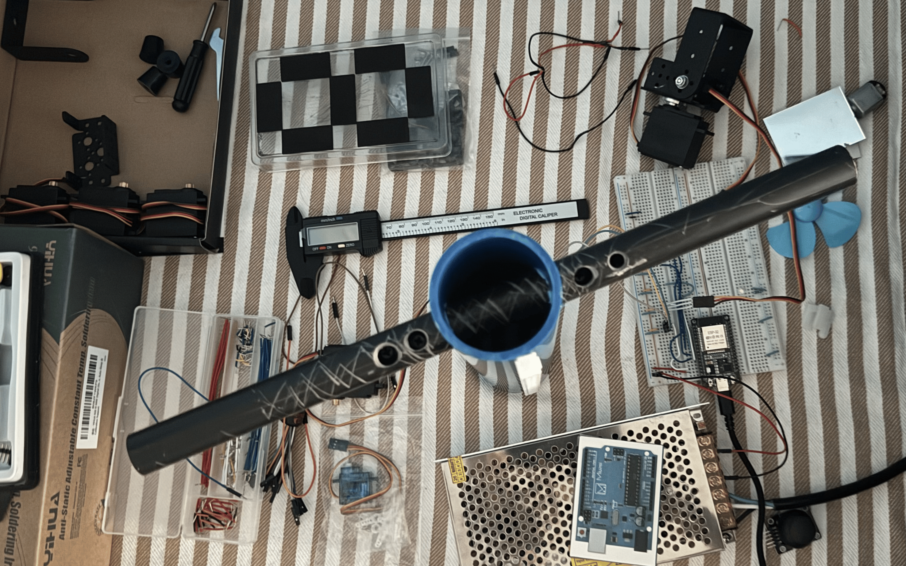

Manipulation
Python
Humanoid Robot
An upper torso with AI-controlled arms (3 DOF each) and a head fitted with a camera, microphone, and speaker, aimed at handling natural, spoken human requests. Designed to respond as a friend and colleague as I pursue future ventures, he is currently addressed by his working title, Bob (Basic Operational Biomorph). He is almost entirely software at this point but will soon have a physical body to control. See the build log for updates starting October 2026 upon the release of this website.
In progress - Started May 2026